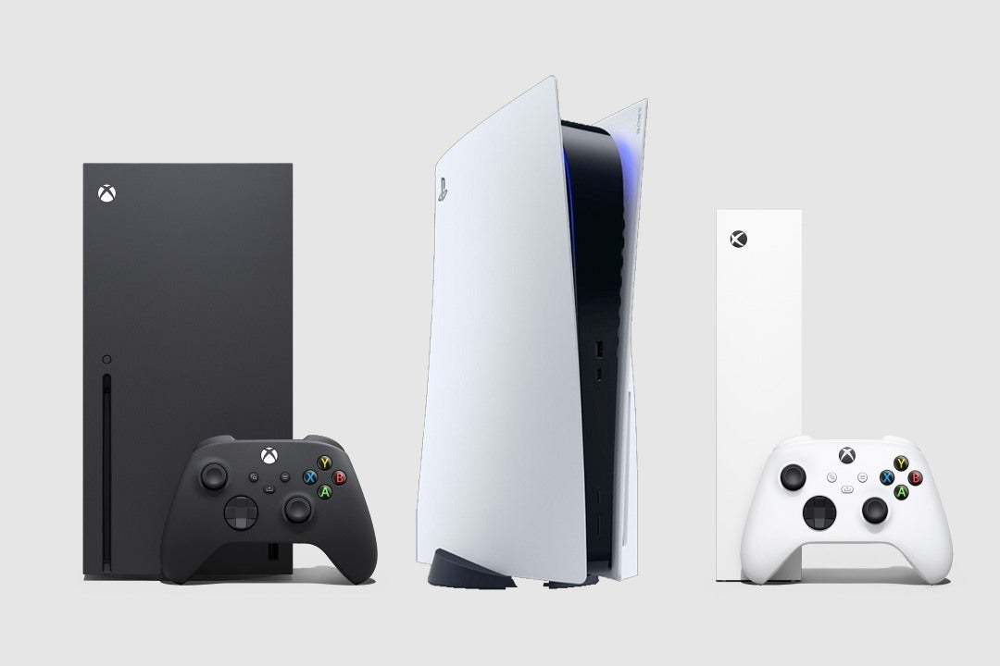

Lisa Su, la mujer que revoluciono a la empresa AMD
En 2014 AMD (Advanced Micro Devices) no pasaba por su mejor momento, pues a pesar de que la compañía poco a poco buscaba satisfacer las demandas de sus clientes y demostrar
que eran un poderoso rival de Intel, la realidad es que sus procesadores seguían lejos del rendimiento y popularidad de los de su acérrimo rival.
Como parte de una estrategia de cambio, la compañía anunció ese año que Lisa Su se convertiría en CEO de AMD para sustituir a Rory Read, movimiento que traería grandes frutos
a la empresa en poco tiempo.
 Su comenzó su carrera desde abajo, pues trabajó en Texas Instruments, IBM y Freescale Semiconductor en algunos puestos de ingeniería y administración, y sus conocimientos
sobre desarrollo y fabricación de semiconductores la llevaron a convertirse en vicepresidenta del Centro de Investigación y Desarrollo de Semiconductores de IBM.
Su comenzó su carrera desde abajo, pues trabajó en Texas Instruments, IBM y Freescale Semiconductor en algunos puestos de ingeniería y administración, y sus conocimientos
sobre desarrollo y fabricación de semiconductores la llevaron a convertirse en vicepresidenta del Centro de Investigación y Desarrollo de Semiconductores de IBM.

Fue hasta 2012 cuando Lisa Su fue contratada por AMD como vicepresidenta senior de las unidades comerciales globales y directora de operaciones. En solo dos años pasó a
convertirse en la máxima dirigente de la compañía con el reto de posicionarla como una de las firmas con los mejores procesadores del mercado, misión que se veía complicada
ante el dominio de Intel con sus Core i3, i5 e i7.
 En ese momento, Su dijo “Me siento sumamente honrada de tener la oportunidad de dirigir a AMD durante esta importante etapa de transformación. Nuestros activos tecnológicos
de clase mundial, combinados con el increíble talento y pasión del equipo de AMD, nos brindan una oportunidad única de cambiar el futuro del cómputo. Espero expandir los
sólidos cimientos que construimos bajo el liderazgo de Rory conforme desarrollemos tecnologías y productos líderes en la industria para diferentes mercados y, de esa forma,
generar un crecimiento sostenible y rentable”.
En ese momento, Su dijo “Me siento sumamente honrada de tener la oportunidad de dirigir a AMD durante esta importante etapa de transformación. Nuestros activos tecnológicos
de clase mundial, combinados con el increíble talento y pasión del equipo de AMD, nos brindan una oportunidad única de cambiar el futuro del cómputo. Espero expandir los
sólidos cimientos que construimos bajo el liderazgo de Rory conforme desarrollemos tecnologías y productos líderes en la industria para diferentes mercados y, de esa forma,
generar un crecimiento sostenible y rentable”.
La reinvención de AMD

 Aunque AMD no estaba en crisis, Su sabía que los equipos de trabajo
tenían que renovarse para conseguir los resultados deseados, aunque el mayor reto era crear una serie de procesadores que tuvieran un alto impacto tanto por la parte de
marketing como en el de experiencia de uso.
Aunque AMD no estaba en crisis, Su sabía que los equipos de trabajo
tenían que renovarse para conseguir los resultados deseados, aunque el mayor reto era crear una serie de procesadores que tuvieran un alto impacto tanto por la parte de
marketing como en el de experiencia de uso.
Con más de 15 años de experiencia en la creación de semiconductores, Su impulsó bajo su liderazgo el desarrollo de los procesadores Ryzen, los cuales fueron presentados
en 2017, y desde sus inicios plantaron cara a los Core i3, i5 e i7 de Intel.
El éxito de los procesadores Ryzen fue el cambio de arquitectura de Bulldozer a Zen, la cual logró que los Ryzen tuvieran un mayor rendimiento multihilo al nivel de los chips
de Intel, algo que pocos creían posible en tan poco tiempo.
La familia Ryzen ha sido uno de los lanzamientos más importantes bajo el mandato de Lisa Su en AMD, pues desde 2017 la cuota de mercado de la compañía ha ido incrementando,
mientras que la de Intel va disminuyendo, aunque según cifras de Statista, Intel tiene actualmente una cuota de mercado del 80.3%, mientras que la de AMD es del 19.7%, una
diferencia importante, pero que refleja el buen trabajo de Su, pues en 2016 la cuota de mercado de AMD era de solo el 9%, mientras que la de Intel rozaba el 91.5%.

En 2019 AMD se adelantó tecnológicamente a Intel con la presentación de los Ryzen 3000 y su proceso de litografía de 7 nanómetros, algo que incrementó el rendimiento y la
popularidad de la marca en el sector.
Por otro lado, Su se ha encargado de cerrar grandes acuerdos con los principales fabricantes del mercado que hasta hace unos años solo apostaban por los procesadores Intel,
pues durante su presentación en el CES del 2021 reafirmó que firmas como Microsoft, HP o Lenovo seguirán utilizando los procesadores de la firma en sus
diferentes familias de productos.
De igual manera, la nueva generación de consolas Xbox Series X|S y PlayStation 5 están impulsadas por la tecnología de AMD y su arquitectura Zen2.
Una mujer altamente reconocida en la industria
En 2014 Su fue nombrada Ejecutiva del Año por EE Times, mientras que en 2017 fue reconocida como una de las grandes líderes del mundo por la revista Fortune,
año en el que Bloomberg la incluyó también en la lista de las 50 personas que definieron el 2017, sobre todo por los lanzamientos de su compañía.
Para 2019 la empresaria fue la CEO mejor pagada del año con una remuneración de 58.5 millones de dólares gracias al sólido desempeño y valor de las acciones durante sus años
al frente de la empresa. Con ese pago la ejecutiva superó las ganancias de otros altos mandos de Discovery, Walt Disney, Adobe y Netflix.
A lo largo de 2020 Su ocupó el segundo lugar de la lista “Empresaria del año” de la revista Fortune, ganó el Premio Abie de Liderazgo Técnico de Grace Hopper y se convirtió en presidenta de la junta directiva de la Global Semiconductor Alliance.